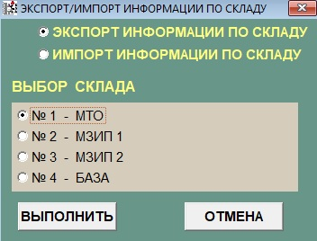
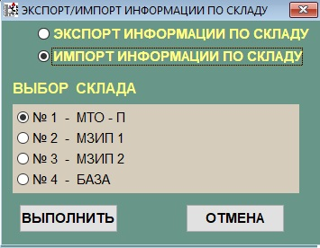
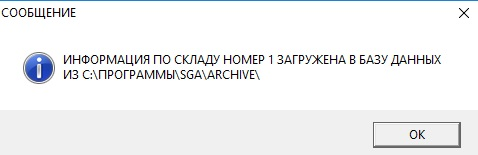

Sous-systeme "Exportation \ Importation d'informations par entrepot"
В конец документа
Данный режим работы реализует функцию загрузки и выгрузки информации по складу. Данная функция нужна для следующего:
- Для передачи информации по складу из базы данных одного локального рабочего места в базу данных другого локального рабочего места.
- Для хранения и аварийного восстановления информации по складу.
При работе в данном режиме формируются следующие файлы выгрузки:
- INFSKLx.DBF - информация об элементе склада х.
- INFSKLx.FPT - графическое изображение элементов склада х.
Окно подсистемы "Склады" показано на рисунке 1.

Рисунок 1 - Окно подсистемы склады
Поля в данной подсистеме означают следующее:
- Поле "Экспорт информации по складу" - Текущая информация базы данных по выбранному складу сохраняется в файлах выгрузки.
- Поле "Импорт информации по складу" - Информация из файлов выгрузки по выбранному складу загружается в базу данных и становится текущей.
- Поле "Выбор склад" Названия склада. Есть 4 варианта:
- № 1 - МТО - П.
- № 2 - МЗИП 1.
- № 3 - МЗИП 2.
- № 4 - База.
Кнопки в данной подсистеме означают следующее:
- Кнопка "Выполнить". При нажатии, в завимости от того что выбрано осуществляется ЭКСПОРТ или ИМПОРТ информации по складу.
- Кнопка "Отмена". При нажатии происходит закрытие подсистемы "Склады" и возврат в главное меню.
Рассмотрим как делать экспорт и импорт:
-
Экспорт:
- Выделяем - "Экпорт информации по складу" смотри рисунок 1.
- Выбираем какой склад экспортируем.
-
Нажимаем кнопку "Выполнить".Если высветилось сообщение - "Папки не существует", то надо нажать кнопку "Ок" и повторить экспорт.
У вас должно появится сообщение - "Информация по складу номер(номер склада) сохранена в (Путь куда сохраняется экпорт файла)".
- Нажать кнопку "ОК", при этом произойдет возврат в подсистему "Склады"
-
Импорт:
-
Выделяем - "Импорт информации по складу" смотри рисунок 2.

Рисунок 2 - Склады на импорт
- Выбираем какой склад импортируем.
-
При появление сообщения - "Информация по складу номер(номер склада) не найдена в(Путь к папке Sklad в корне программы)", надо проделать следующее:
-
Проверить существования папки Sklad в корне программы, в случае необходимости создать:
- Создать руками
- Пройти в папку куда ставилась программу(по умолчанию - program files(x86)).
- Нажать правой кнопкой мыши на свободном месте в папке.
- Из появившегося подменю создать-папку.
- Ввести имя папки - "Sklad".
- Сделать экспорт склада, тогда папка создатся по умолчанию.
- Проверить существования файлов : InfSkl1,InfSkl2,InfSkl3,InfSkl4 в папке Sklad.
- Повторить импорт.
- Дождаться сообщения "Информация по складу (№ склада) загружена в базу данных из (Путь к файлу)" смотри рисунок 3.

Рисунок 3 - Сообщение об импорте
- Нажать кнопку "ОК". При этом произойдет возврат в подсистему "Склады".